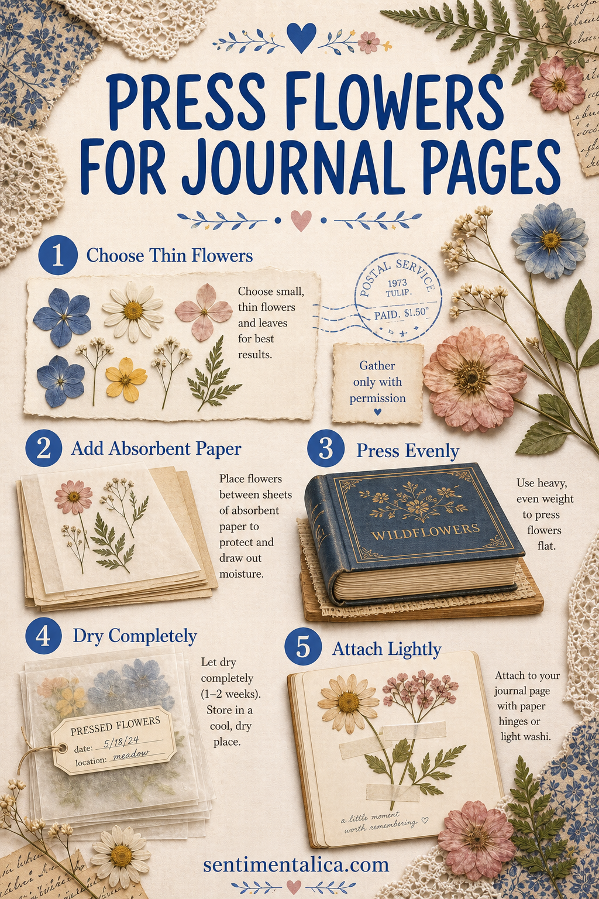
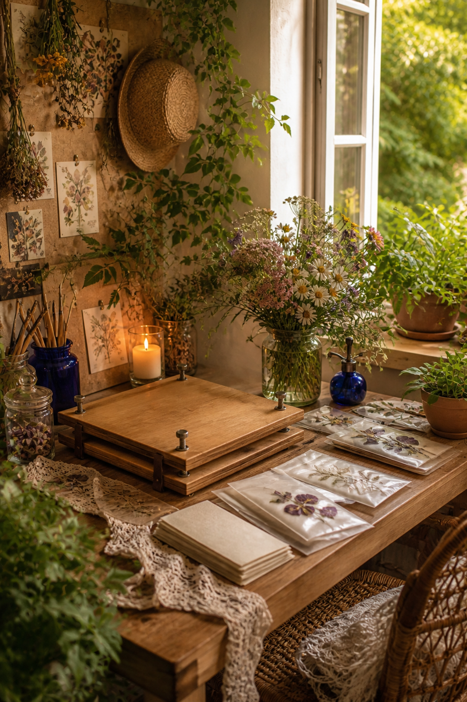

Pressed flowers can make a journal page feel connected to a real afternoon, but only when they are dry, flat, and attached with restraint. A damp bloom can stain paper or encourage mold; a thick stem can distort the whole book.
Begin with flowers you own or have permission to gather. Avoid protected plants and unfamiliar species, and never take from public gardens without consent. Small, naturally flat flowers and individual petals are the easiest place to start.

Choose thin flowers at a dry moment
Pick flowers after surface moisture has disappeared. Violets, pansies, small daisies, fern tips, and individual hydrangea petals tend to press more reliably than fleshy blooms. Remove damaged petals and trim bulky stem sections.
If a flower has a thick center, separate the petals or cut the bloom carefully in half. The goal is even drying, not preserving every specimen whole.
Prepare absorbent layers
Place the flowers between clean sheets of plain, absorbent paper. Printer paper, blotting paper, or unprinted newsprint can work. Avoid textured paper that may emboss delicate petals and glossy paper that traps moisture.
Arrange petals with a pin or tweezers before closing the paper. Leave room between specimens so moisture can move away from each one.

Press evenly and wait
Place the packet inside a heavy book, then add more weight across the full surface. Protect valuable books with extra paper or use a dedicated flower press. Keep the stack somewhere dry and undisturbed.
Check after several days and replace damp sheets if necessary. Most small flowers need one to three weeks. A specimen should feel papery and cool-neutral, never soft or clammy.
Store before you journal
Move fully dried flowers into labelled paper envelopes or glassine sleeves. Add the date and place. Store flat, dark, and dry until you are ready to use them.
A small archival record can be more meaningful than a large anonymous collection. Keep only flowers connected to a walk, garden, gift, or season you want to remember.
Attach with the lightest useful method
Use tiny dots of suitable paper adhesive beneath stronger parts of the flower, or secure a fragile specimen beneath a hinged piece of tracing paper. A narrow paper strip across the stem can hold it without covering the petals.
Do not laminate fresh botanicals or seal moisture inside heavy glue. If a specimen is too delicate, photograph or scan it and use the printed image in your journal instead.
- Gather legally and when dry.
- Remove thick, wet, or damaged parts.
- Press between absorbent paper.
- Wait until every piece is fully papery.
- Attach one specimen as the page’s quiet focal point.
The safest pressed-flower page begins with patience before decoration.
Add the flower’s date, place, and one sentence about why you kept it. That small record turns a botanical accent into a memory.
Explore more nature-led craft ideas in the Sentimentalica journal.